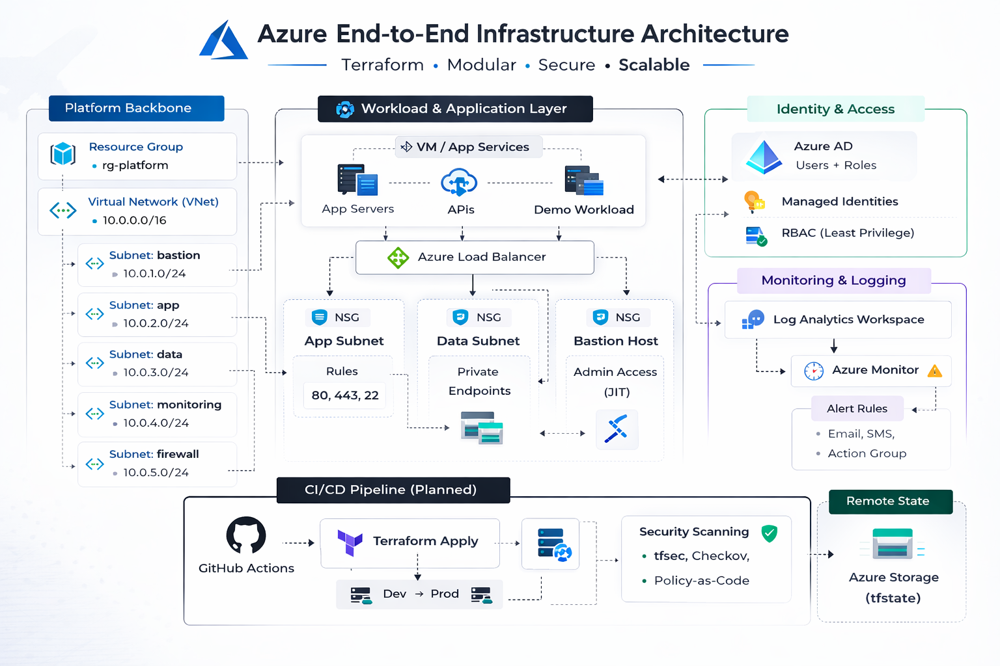

End-to-end Azure environment built manually for validation and rebuilt using modular Terraform for repeatable, production-style deployment.

The design follows a platform-first architecture separating networking, identity, monitoring, and workload components. Network segmentation and RBAC boundaries were validated before automation to ensure production-grade posture.
Core components include segmented VNets, deny-by-default NSGs, managed identities, centralized Log Analytics, and Azure Monitor alerting integrated from the start.
After manual validation, infrastructure was rebuilt using modular Terraform with remote state and environment isolation.
azure-e2e-iac-manual/
├── backend.tf
├── main.tf
├── variables.tf
├── outputs.tf
├── modules/
│ ├── networking/
│ ├── monitoring/
│ ├── identity/
│ └── workload/
└── environments/
├── dev/
└── prod/
Security and monitoring were designed as first-class architectural components. Least-privilege RBAC, managed identities, and centralized audit logging were implemented before automation.
Azure Monitor, Log Analytics, and alerting workflows provide operational visibility and readiness for CI/CD integration.